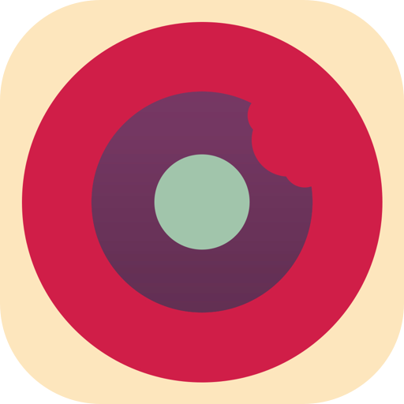
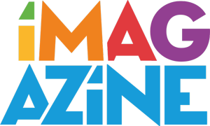

LIVE SITES
Explore the collection
Three public sites are currently available under this domain.
-

Nadgryzieni Episode Archive
An interactive archive of Nadgryzieni podcast episodes, with timelines, listening-time statistics, and searchable episode records.
morid1n.github.io/nadgryzieni-episode-archive/
-

iMagazine Readership Study 2026
A bilingual, evidence-linked editorial analysis of 455 responses on reading, podcast use, and purchasing influence.
morid1n.github.io/badanie-czytelnictwa-imagazine-2026/
-
Subjective
An early static-publishing experiment exploring alternatives to WordPress and lightweight blogging workflows.
morid1n.github.io/Subjective/
OTHER PROJECTS
Other projects
A few other places and projects worth exploring.
-
iMagazine.pl
Technology, lifestyle, travel, and art.
imagazine.pl
-
Nadgryzieni – Rozmowy (nie tylko) o tech
Nadgryzieni podcast episodes on Retro Rocket Network.
retrorocketnetwork.pl/category/nadgryzieni/
-
Instagram
Wojciech Pietrusiewicz on Instagram.
instagram.com/moridin
-
Mastodon
Morid1n on Mastodon.
mastodon.online/@moridin
-
Infinite Diaries
Technology, photography, and travel.
infinitediaries.net